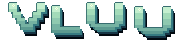

Selamat datang di VLUU 98

C:\VLUU\Proyek
AlamatC:\VLUU\PROYEK
Pulau Gobi
Serial low-poly yang pulaunya berubah tiap episode. Adegan dibuat dengan Three.js dan Remotion.
KALARYA
Aplikasi untuk mengatur tugas, proyek, dan kerja bareng.
PisGo
AI untuk menilai kematangan pisang Cavendish dan merencanakan waktu panen.
Karaga
Desain dashboard dan splash screen aplikasi pencatatan keuangan.
JedaIn
Proyek wisata wellness. Juara Harapan 1 di HOLOGY 9.0.
Smart Door Lock
Eksperimen retrofit kunci ESP32 dengan kunci fisik.
6 file ·
CATATAN.TXT — Notepad
Catatan bengkel
Di Pulau Gobi, barang yang muncul di satu episode bisa dibutuhkan lagi nanti. Keadaan pulau disimpan per episode.
Untuk kunci ESP32, silinder dan kunci manual ikut menentukan posisi aktuator.
Screensaver
